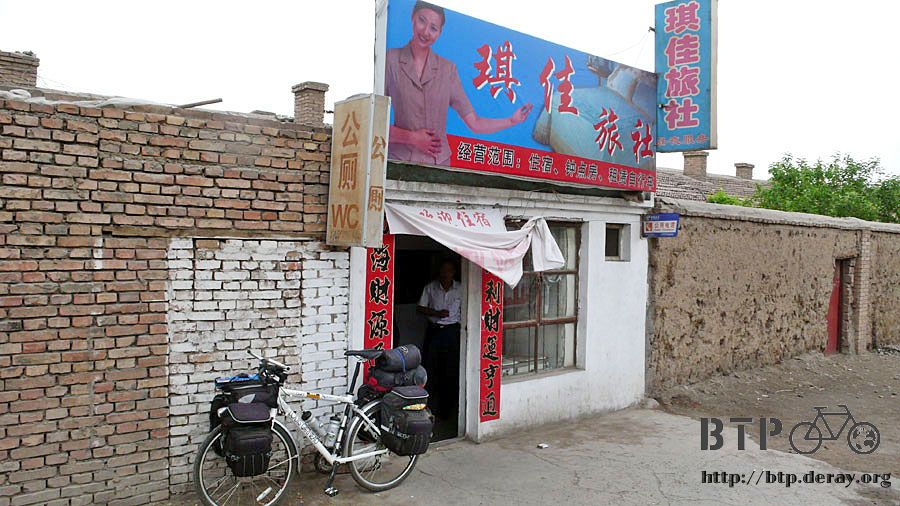

The Kid away from home
I only scheduled 50 kilometers today. It’s going to be an easy task, so, I’m not hurry to move out early.
My plan was to ride 25 kilometers from the place I stay last night.
If my pace it right, I can have lunch over Jiu-Quan city when arrived.
Take a nape after I’m full then heading to my next 25 kilometers to Jia-Yu-Guan,
before 3 o’clock in the afternoon then have some meals and find my over night stay.
What a nice day, it is!
The weather report shown heavy rain alert on the south-east China.
The raining alert included Beijing all the way south and Zheng-Zhou city to Lanzhou city on the west.
I am so lucky that area were all behind me. Other wise, I will be ether watching the heavy rain and sigh or struggled in the rain.
On the way to Jiu-Quan city, some cotton like fiber flying every where.
It came from the trees standing by the road. The wind keep blowing, carrying those cotton like fiber all over the place.
It goes into my nose, into my mouth, or came around my glasses into my eyes…

As my plan, I was arriving Jiu-Quan city at 12 o’clock.
The weather still cloudy and chill, the sun still stays behind the heavy cloud.
A little bit of rain, comes and goes. I can see the heavy cloud moving south-east by the strong wind.

There were petals blown by the wind all around the road to Jiu-Quan. What a romantic city it is! (to see a road cover with flowers)
Sliced noodle was the lunch I had here.
The noodle cost differently by the size of extra, large and small.
I never try anything called extra, so I order it. After the noodle was there,
I found out the difference was putting more meat in it, so called “extra”.

This is which I often mention about people leaving their food and came to check out my bike.
After I taking this picture and put my camera in my bag. Answering a lot of funny question will start to happen.

I went to the store when finished my meal. I need to get more supplies.
I am going all the way to U-ru-mqi city. I guess it is 1800 kilometers away.
I bought a big pack of Hsia-Wei-Hsien (It’s a shrimp flavor kind of snake),
Six of Sha-Qi-Ma (a Manchurian snake), one Shan-Zha-Pai (cookies make from fruits of Haw tree) and cost me 6.5 Chinese dollars.

When I enjoying my Shan-Zha-Pai and heading to Jia-Yu-Guan, I saw this sign.
It explains that I am not far from that city. Suddenly, I realized Lan-zhou city was way behind me…
It’s alright to have a little head wind.
The branch of the trees was lower down gently is now blowing by the strong wind which makes them swinging back and forth.
It’s OK to have a little rain shower.
The weather man mention about the serious drought, having a bit of rain will be nice.
Well, the rain was light, I don’t need to put on my rain coat.
I think it will stop raining later on.
(I had this same thought when I was riding in the mountain. It turn out that I was soaking wet that time.)

Shin-Shin canyon (It means Star canyon) was the boundary of Gan-Su province and Xin-Jiang province.
It was beautiful, just hearing the name of that place.
I plan to stay one night over there. But, why was the sign say “Gorilla canyon”?
(The pronouncing of those Chinese words, Shin-Shin and gorilla, sounds exactly the same)
It makes a lot of different to me. I don’t want to stay in a place with many gorillas.

Arriving Jia-Yu-Guan at 2 PM and finish up today’s trip.
I can rest even before worming up. Hurray! Hurray! Hurray!
Looking for a place to stay over night when I was ridding. I ask some curious people,
which is the right way? How can I go to the Great Wall? Could I go in with my bike?

Jia-Yu-Guan was the west end of the Great Wall.
It is the most important fortress of national defenses, for many years.
In the old time, once you go out from this fortress, will be foreign country.
I want to visit the Great Wall tomorrow, even just passing by the front door.
If I came to China without seeing the Great Wall, seems like something was missing.

As I was seeking a place to stay over night, I went into a market place. There was this little hotel which cost me 15 Chinese dollars for one night.

It was near by the market place and other stores; it’s good for me to add more supplies.
If I walk out of the market place, the main street was close to the internet cafe?
I think this will be the right place for me tonight. The owner asks me to park my bike out side.
But, I insist to sleep with my lovely bike.
The tiny crowded room with all my baggage and my bike made me had to move everything when I want to open the door.
Every time when I found a place to stay, I always check with few things.
First of all, to find where could I wash my clothes.
Then I had to find the restroom. Finally, I will grab a bottle of hot water.
Every time when people saw me and my gears, they ask me where did I come from?
This hotel owner asks the same thing.
I said that I come from Xi-An to Lanzhou then arrived here. I will go to Xian-Jiang, later on.
Suddenly, I saw his face shown a bit of loneliness and sadness. I did not know what is going on, but, I did not ask.
Put on comfortable clothing, it is my style of pajamas.
Going to start my dirty laundry by hand for all of my clothes I wear in these 2 days.
The boss said he can lend me the washing machine since, I got so many clothes.
Wow! It is a washing machine even though it is a super antique.
After, putting my dirty clothes and detergent, the water had to pour in by hand.
But, it really can help for cleaning my clothes. I put the clothes in and went back to my room for washing powder.
The detergent was inside of the washing machine when I came back, it was the boss.
He told me that his son study in Xi-An when I was pouring water into the washing machine.

“Oh~ which one?” I pretended was came from Xi-An, so I ask like I was living there.
“Xi-Jing University” He puffs out his cigarette and reply slowly.
The smoke went out side but, that lonesome feeling still stays on his face.
His son was 4 years younger than me.
Although he did not say much, I can feel that his son was not visiting his father often, after he went to college.
I supposed the sad feeling of the boss was came form me,
because I came from Xi-An and about the same age, so he started to missing his son.
Remind me a young man setting beside when I went to an internet cafe?,
in Xi-An. He was video chatting with his friend. He mentions a fight with him and his father makes him mad.
He plans not going home for the next coming year to piss off the father.
Even the chances of the kid in the internet cafe?
and the owner of this hotel were father and son was one in a billion.
If the son of the boss can see what I saw the lonesome farther.
Remember come back to Jiu-Quan and check out your family, OK?
My clothes were spinning in the washing machine for few minutes and the water turned into the color of the water after you mopped the floor.
I took a big washbowl and clean up the clothes manually then put it into a dryer.
It’s really easy to clean up my stuff with washing machine.
After, hang up these clothes, I will have clean stuff to ware again.
Finishing the dirty laundry and take a bath, I decided to go to the market place for shopping.

Continue my supplies of snacks; I bought 4 packs of milk; 2 original flavor, 1 peanut flavor, 1 malt flavor. 2 packs of peanuts
(it’s very good for supply your energy, its high caloric)
and something I never think I will buy it “canned peaches”.
I was curious about the price, so I ask the lady how much?
It’s 7 Chinese dollars, not much for a size like this and looks tasty.
Than the lady said something which made me wants to buy it.
“You can use it as water can, after you’re finished the peaches”!
I already got my water bottles but, she makes me think of some other thing which I can put it into this can. OK! You got this deal.

On the way back to my hotel, it rain like hell. Nothing like the rain was gently dripping, not long ago.
Luckily, I am going to rest for today. Imagine if I was still on the road, I’ll be soaking wet by now.
Running back to my hotel and started to enjoy my cookies and peaches.
I lying on the bed and writing my journal. Suddenly, I felt very sleepy.
Maybe, I should take a good sleep and doing nothing all day.
I think it will be nice.
On the dinner hour, I went to the market place.
All those stand and store was turn into night market with all kinds of foods.
I saw something looked like those food stand selling salty fried chicken nugget in Taiwan.
But, this one got a pot with dark color oil frying. Every thing cost 50 Chinese cents and everything was on stick.
I pick 2 pieces of smelly tofu, 2 pieces of fried sweat potato ball, one mini sausage.
Everything goes into that dark color oil and deep fry.
They will brush salty chilly source and some vinegar if you like it.
In this little food stands without any chair, the cook will ask you having it there or take it out.
If you want to have it there, they will put it on a little plat and ate it while you standing beside the stand.
When I was eating there and watching him selling his food.
There are many choices, from green pepper to baked flower cake.
It tastes nice but, I was wondering if it is local flavor or just an ordinary food stand.
Walking around the night market when I eating this funny salty food.
I order some pork’s ear stew with soy beam source.
They sliced it for me and add some shred spring onion, mash garlic and some other spice.
It only cost me 4 Chinese dollars and 20 cents.
It will be great for me to have it when I watching movie at home.
80 percent of the restaurant in this night market selling goat meat barbecue.
The number was so great which makes me sense a kind of exotic feeling.